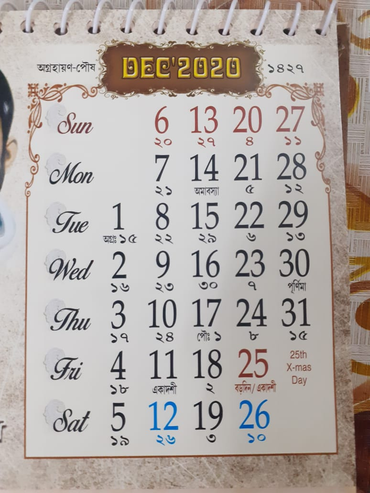
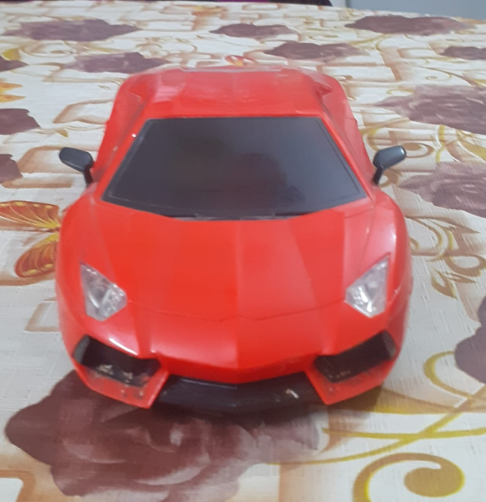
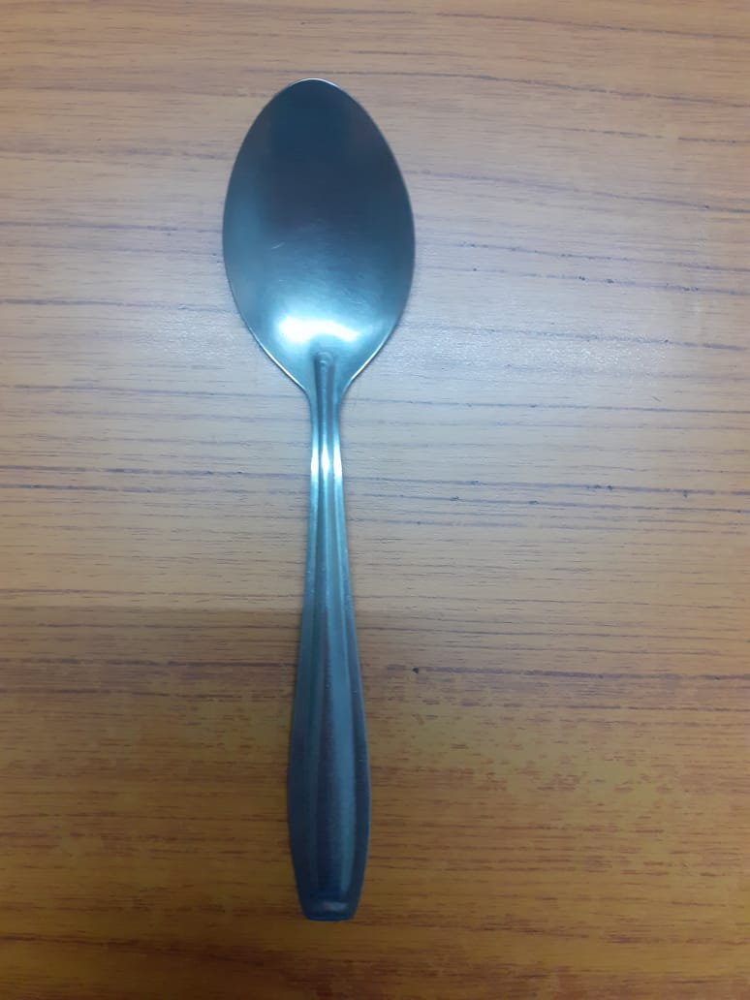

Case Study between Google Lens and MobileNet
Google Lens

vs
MobileNet
1. Test Image -
Output on Google Lens - Blankets
Output on MobileNet Model - Quilt, comforter
Result -
Draw
2. Test Image -
Output on Google Lens - Photo Album
Output on MobileNet Model - Website
Result -
Google Lens is more accurate
3. Test Image -

Output on Google Lens - Calender
Output on MobileNet Model - Menu
Result -
Google Lens is more accurate
4. Test Image -

Output on Google Lens - Toy Car
Output on MobileNet Model - Sports Car
Result -
Google Lens is more accurate
5. Test Image -
Output on Google Lens - Alarm Clock
Output on MobileNet Model - Analog Clock
Result -
Draw
6. Test Image -

Output on Google Lens - Fuji Apple
Output on MobileNet Model - Maraca
Result -
Google Lens is more accurate
7. Test Image -

Output on Google Lens - Mobile Phone
Output on MobileNet Model - remote control, remote
Result -
Google Lens is more accurate
8. Test Image -
Output on Google Lens - Cassete Recorder
Output on MobileNet Model - Cassette Player
Result -
No one is more accurate. Draw
2. Test Image -

Output on Google Lens - Spoon
Output on MobileNet Model - Spatula
Result -
Google Lens is more accurate
2. Test Image -